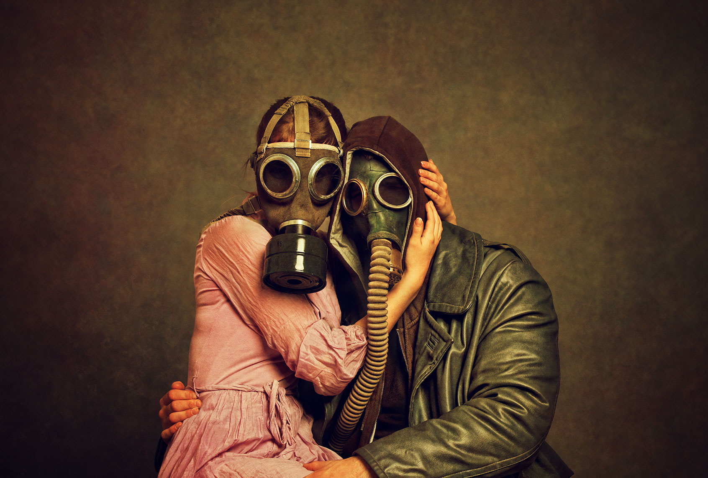
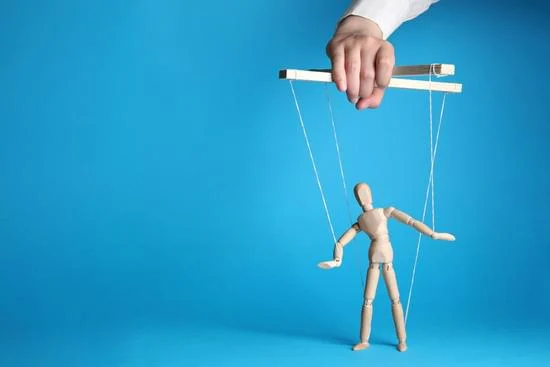

¿Cómo son las parejas tóxicas?
Las relaciones tóxicas no siempre comienzan siendo evidentes; muchas veces se disfrazan de amor intenso o dependencia emocional. Poco a poco los límites se diluyen y el vínculo que debería sostenernos, empieza a desgastarnos. Pero ¿cómo reconocer si estamos dentro de una relación tóxica?
¿Qué es tóxico?
La palabra tóxico deriva del latín toxikon pharmakon, que literalmente significa "veneno para flechas". Con el tiempo se asoció con sustancias que envenenan o alteral el organismo, y de ahí pasó a tener un uso metafórico en el lenguale psicológico, especialmente en las adicciones y el ámbito relacional-emocional.
Cuando decimos que una relación es tóxica, estamos usando esa metáfora: se trata de un vínculo que envenena emocional o psicológicamente a una o ambas personas. La dinámica genera sufrimiento, deterioro de la autoestima, dependencia, miedo o culpa, igual que una sustancia tóxica deteriora el cuerpo. Esto guarda una estrecha relación conceptual y funcional con las adicciones. Muchas relaciones tóxicas funcionan como adicciones afectivas.
Cuando el amor se convierte en control
Al principio, todo puede parecer pasión. Mensajes constantes, interés por cada detalle, promesas de amor eterno. Sin embargo, con el tiempo, ese interés puede transformarse en vigilancia. El control disfrazado de cuidado es una de las señales más comunes: revisar el teléfono, decidir con quién se sale, o incluso, opinar sobre la ropa o el trabajo del otro.
"El problema no es el amor, sino la pérdida de autonomía."
Todas estas formas de violencia tienen como objetivo ejercer coerción en la voluntad y finalmente conducta de la otra persona, controlándola a su antojo y para sus necesidades. Una pareja saludable promueve la libertad; una tóxica, la limita.
La manipulación emocional: el poder invicible
Las relaciones tóxicas no siempre son violentas a nivel físico, pero si profundamente destructivas a nivel emocional. El chantaje, la culpa y el silenciamiento son herramientas frecuentes.
Frases como "si me quisieras, no harías eso" o "sin mí no serías nada" enredan a la otra persona en una espiral de duda y dependencia afectiva. La persona empieza cuestionándose su realidad, pensando que en algún punto la persona manipuladora tiene razón.
Detrás de esa manipulación suele haber inseguridad, miedo al abandono o necesidad de control, tanto en quien la ejerce como en quien la sufre. Reconocerlo no es simple, porque la persona termina creyendo que ella es el problema.
Amor o dependencia: una línea muy delgada
En consulta muchas personas me dien "sé que me hace daño, pero no puedo dejarlo/a". Esto no es falta de fuerza de voluntad, sino un fenómeno psicológico profundo que tiene que ver con aspectos neurobiológicos: como la activación del circuito de recompensa, a través de las vías dopaminérgicas que generan placer; aspectos conductuales como un esquema de refuerzo intermitente, en el que hay momentos de ternura y promesas seguidos de conflictos y desvalorización; aspectos de la personalidad donde pueden haber rasgos clínicos o subclínicos narcisistas o dependientes, y aspectos relacionales donde el trauma simple o complejo y los vínculos de apego juegan un papel protagónico.
Estas combinaciones cíclicas producen una forma de adicción emocional, donde el cuerpo y la mente esperan el "próximo momento bueno".
"Salir de allí implica romper con la ilusión del cambio, aceptar el daño y reconstruir la autoestima."
Señales de una pareja tóxica
A continuación, algunas señales que pueden ayudarte a identificar este tipo de vínculos:
- Te sientes culpable por expresar tus emociones o necesidades.
- Vives en alerta esperando el próximo conflicto.
- Sientes que estás "perdiendo tu esencia".
- Hay celos, desconfianza y críticas constantes.
- Tu bienestar depende del estado de ánimo del/de la otro/a.
- Sientes "un nudo en el estómago" que parece miedo, en su precencia.
- Se aparece en tu lugar de trabajo como una "sorpresa", sin previo aviso.
- Te hace dudar de la realidad de los hechos.
No se trata de juzgar ni de etiquetar los comportamientos propios ni del otro, sino de reconocer sutilezas y patrones que deterioran el bienestar emocional.
¿Se puede sanar una relación tóxica?
Si, pero no siempre juntos. A veces la relación puede transformarse si ambos reconocen el problema, buscan ayuda profesional y se comprometen a un cambio real. Sin embargo, cuando solo una persona intenta sanar y la otra sigue dañando, lo más saludable es poner distancia.
Tanto la terapia de pareja como la psicoterapia individual ayudan a comprender el origen de los patrones y dinámicas relacionales, y a reconstuir la seguridad emocional. Nadie debería acostumbrarse al maltrato disfrazado de amor.
Una reflexión final nos invita a interpretar que las relaciones tóxicas no se definen por el conflicto, sino por el desequilibrio emocional, el ejercicio de poder de una persona sobre otra y el daño sostenido en el tiempo. Amar no es perderse en el otro, sino crecer juntos desde la libertad, el respeto y la autenticidad. Si sientes que estás atrapado/a en un vínculo que te hace daño, no estás solo/a. Buscar ayuda no es señal de debilidad, sino un acto de valentía y autocuidado.